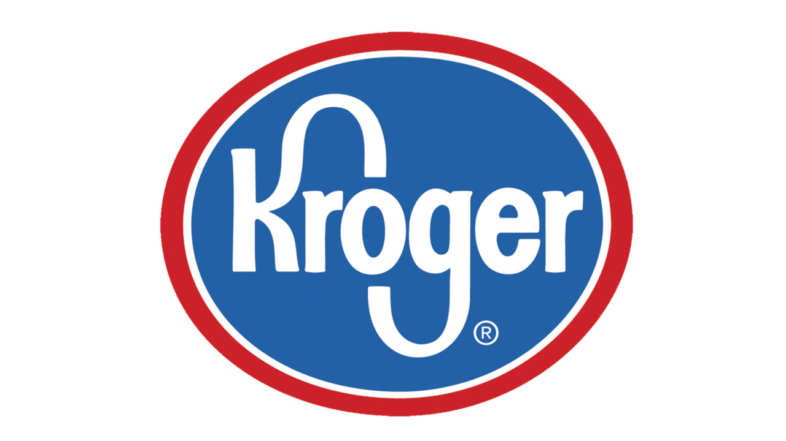

2 Krogers Close Over Hero Pay
- 
Kroger is closing two stores in California rather than pay grocery workers an extra four dollars an hour for working at the nation's largest supermarket chain during the coronavirus pandemic. The company blamed a decision by local officials who recently approved a temporary wage increase for some supermarket employees.
Kroger said it will close the stores, a Ralphs and a Food 4 Less, in April because of the law, passed in January by the Long Beach city council. With a handful of cities across California weighing whether to mandate "hazard pay" for grocery workers, Kroger also warned that it could shut more stores.
Long Beach last month became the first city in California to approve a hazard pay ordinance, with the law requiring grocery stores with at least 300 workers nationwide and more than 15 employees within Long Beach to pay an extra $4 an hour for a 120-day period.
Research has found that frontline employees face higher risks of coronavirus exposure at work. Such workers are also more likely to be Black, Hispanic or Native American, populations that have suffered higher rates of COVID-19.
As hazard pay for many grocery workers has lapsed, they continue to face risk on the job, with the pandemic still rampaging and as some patrons continue to disregard safety mandates like wearing a face mask. At least 134 grocery workers have died of COVID-19, and more than 28,700 have been exposed to a positive case, according to the United Food and Commercial Workers, a union that represents 1.3 million workers including 55,000 at Kroger.
"The city of Long Beach has learned that Kroger decided to close two Long Beach stores based on business needs; it is the city's understanding that the two stores were identified by their owners as long-struggling. Kroger's decision is unfortunate for workers, shoppers and the company," the city said Tuesday in an emailed statement.
Kroger called the city's decision to hike emergency pay "misguided."
"As a result of the City of Long Beach decision to pass an ordinance mandating extra pay, we have made the difficult decision to permanently close store locations in Long Beach. This misguided action by the Long Beach City Council oversteps the traditional bargaining process and only applies to some, but not all, grocery workers in the city," a spokesperson for Kroger said in an email.
The California Grocers Association also has filed a lawsuit against the city, claiming the ordinance is unconstitutional because it skirts a collective bargaining agreement between supermarket companies and unionized workers. A hearing is scheduled for February 19.
"Extra pay mandates will have severe unintended consequences on not only grocers, but on their workers and their customers," said Ron Fong, the trade group's president and CEO, said in a statement to CBS MoneyWatch.
"A 28% increase in labor costs is huge. Grocers will not be able to absorb those costs, and negative repercussions are unavoidable," added Fong, citing a study commissioned by the trade group.
"Outrageous conduct"
Long Beach officials contend courts have upheld similar wage increases. Long Beach Mayor Robert Garcia in a tweet vowed a vigorous defense in court.
The Kroger corporation is closing two markets in Long Beach because our city is requiring temporary hero’s pay for grocery workers during this pandemic. Grocers are making record profits. We go to court this month and we will defend the workers vigorously. https://t.co/Q7H8jRp6iF
— Robert Garcia (@RobertGarcia) February 1, 2021
The UFCW also criticized the grocery's decisions.
"City leaders stepped up to take care of these essential grocery workers and ensure they receive hazard pay for the danger they face. Kroger closing these stores is truly outrageous conduct and a ruthless attempt to create a chilling effect that will discourage other cities from doing what is right and enacting hazard pay mandates that recognize the threat these workers face from COVID-19," Marc Perrone, the union's international president, said in a statement.
The issue is likely to persist, especially in California. The Montebello City Council last week approved a requirement that large drug and grocery stores pay employees an extra $4 an hour for 180 days, and Pomona expects to consider a similar ordinance by March 1. The Los Angeles City Council on Tuesday voted unanimously to proceed with a proposed emergency ordinance that would require big grocery and pharmacy retailers to offer workers an extra $5 an hour in hazard pay during the pandemic.
More store closures?
Kroger signaled it could shut down additional stores in cities that adopt hazard pay requirements. "These misguided mandates could put any struggling store in jeopardy of closure," a spokesperson for Ralphs told the Mercury News.
Kroger in May ended what it called "hero pay," a $2 an hour bonus offered to its more than 500,000 workers starting in April. Instead, the company switched to paying $130 million in bonuses, with full-time workers getting $400 and part-timers receiving $200.
Kroger at one point asked quarantined workers on COVID-19 emergency leave to return what it called "overpayments," demanding that workers repay the extra cash or face bill collectors. The company rescinded its demand after an outcry.
Kroger has tallied record earnings as the pandemic has encouraged more Americans to stay at home, boosting food and other grocery sales. The company recorded more than $2.9 billion in operating profits through the third quarter of 2020, taking in an extra $1.2 billion in earnings compared with a year earlier.
Kroger is redirecting some of that money to investors, with a $1 billion in stock repurchase announced in September. On February 5, the company announced a $147 million dividend payment and said it expects to increase its dividend over time.
Source